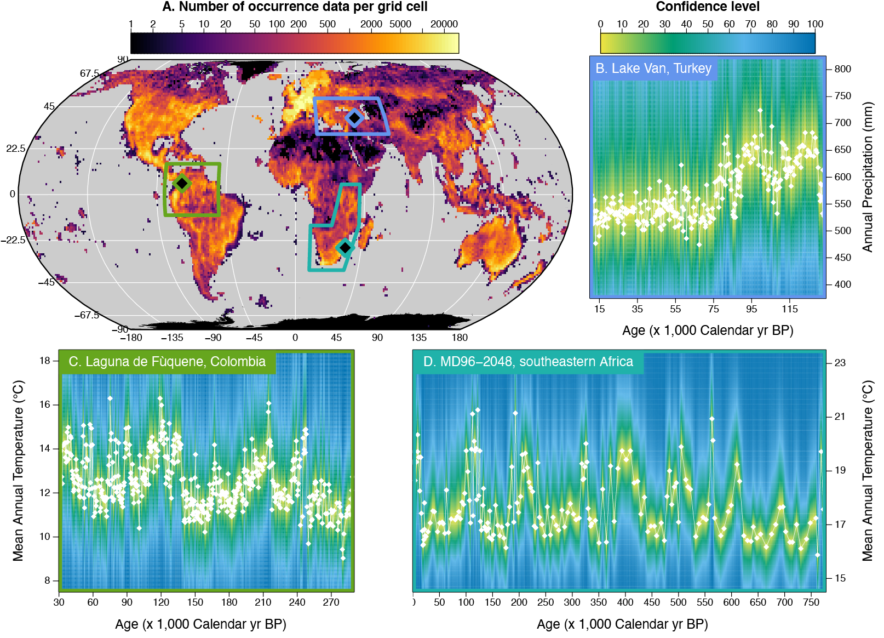
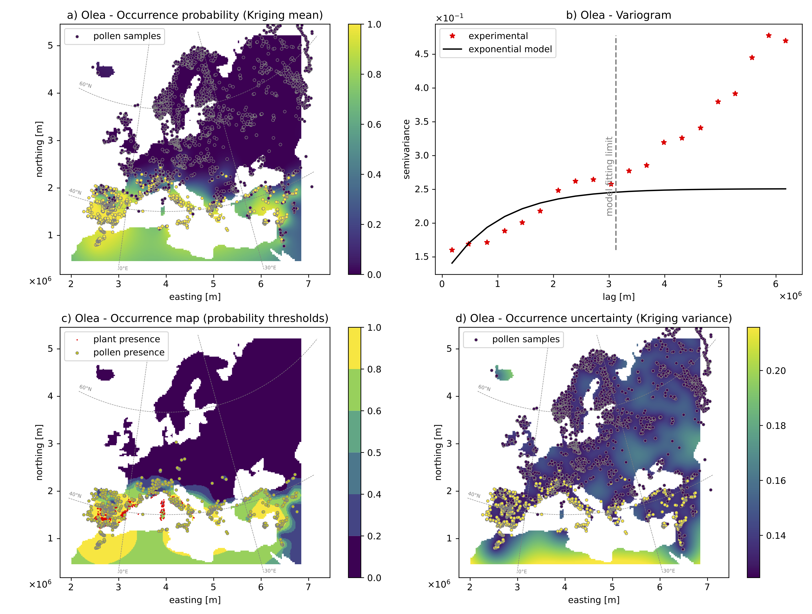
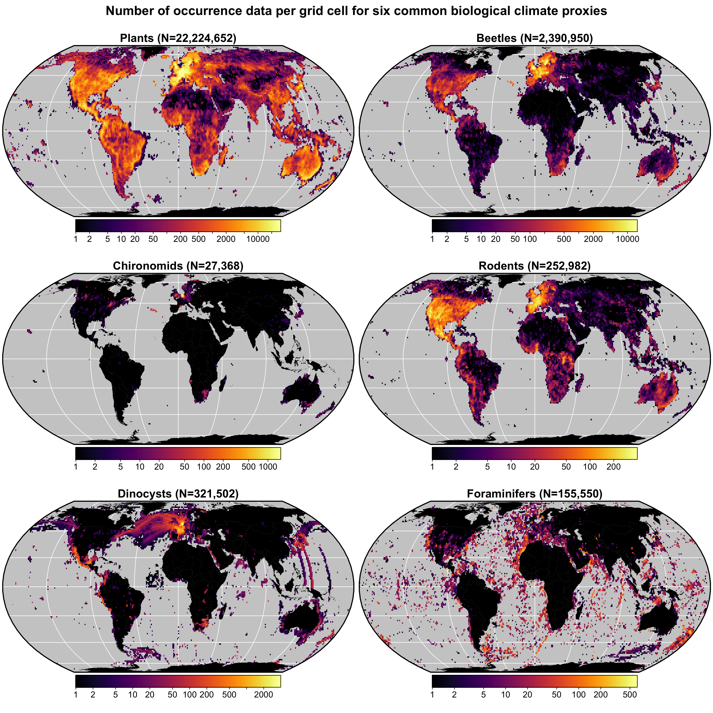
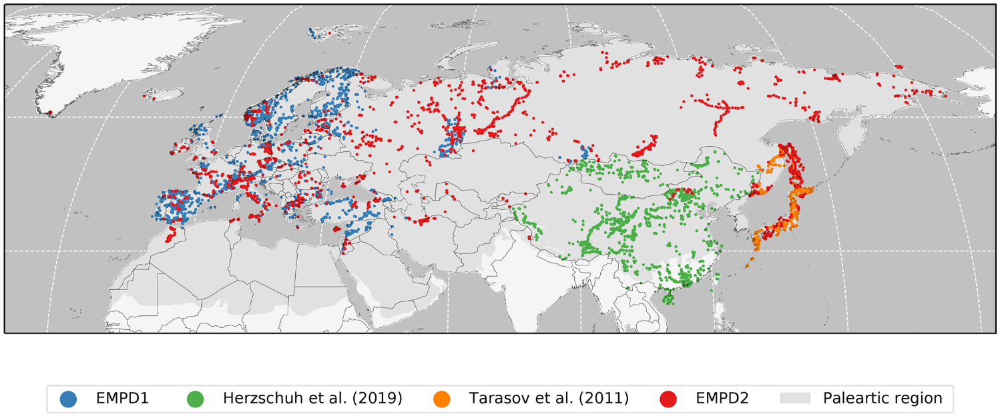
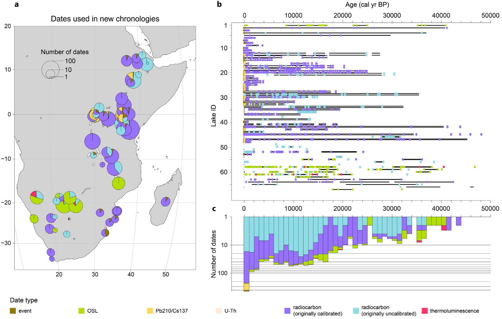

open science
Compilation of peer-reviewed Datasets, Software and Scripts
Pollen-based climate reconstructions
- Chevalier et al. (2020): Mean annual tempeature reconstruction from marine core MD96-2048, Mozambique Channel (0–790,000 cal BP) DOI: 10.1594/PANGAEA.915923 [MAT]
- Chevalier (2019): Annual precipitation reconstruction from Lake Van, Turkey (10,200–133,900 cal BP) DOI: 10.1594/PANGAEA.898171 [Annual precip.]
- Cordova et al. (2017): Temperature and precipitation reconstruction from Lake Ngami, Botswana (0–16,700 cal BP) [MAT&precip.]
- Lim et al. (2016): Temperature and precipitation reconstruction from Pella, South Africa (0–50,000 cal BP) [MAT&precip.]
- Chevalier and Chase (2016): South African Summer Rainfall zone (SRZ) aridity reconstructions (0-45,000 cal BP) [aridity stacks]
- Chase et al. (2015a): Summer and Winter precipitation reconstruction from Katbakkies Pass, South Africa (690–6880 cal BP) [Summer&Winter precip]
- Chase et al. (2015b): Aridity reconstruction from De Rif, South Africa (0–19,400 cal BP) [Aridity]
- Chevalier and Chase (2015): South African Summer Rainfall zone (SRZ) MAT and summer precipitation stacks (0–45,000 cal BP) [MAT&precip stack]
crestr An R package to perform probabilistic palaeoclimate reconstructions from palaeoecological datasets
The goal of crestr is to produce probabilistic reconstructions of past climate change from fossil assemblage data (Chevalier, 2022). The package can be installed from the usual channels (CRAN and GitHub). The package includes a global calibration dataset for several palaeoecological proxies. A suite of graphical outputs were designed to enable an in-depth understanding of the results. More information is available from https://mchevalier2.github.io/crestr/index.html

How to cite: Chevalier, M.: crestr: an R package to perform probabilistic climate reconstructions from palaeoecological datasets, Climate of the Past, 18(4), 821–844, doi:10.5194/cp-18-821-2022, 2022.
A Kriging-based approach to spatially interpolate pollen data
Modern and fossil pollen data are commonly used in paleoenvironmental studies to assess environmental changes in a given location. However, their discrete and discontinuous nature can restrict the conclusions that can be drawn from them. Having continuous spatial maps of pollen presence from point-based datasets would allow for a more robust regional analysis of these historical changes. To tackle this issue, we developed a Kriging-based framework that uses pollen presence and absence data to create continuous probabilistic maps of pollen presence. We tested and validated the model using the Modern European Pollen Database (EMPD2). Since the interpolation model relies solely on the observation coordinates for spatialising the data, similar maps can be generated for fossil pollen records. This approach opens up the possibility of spatially characterizing historical changes and potentially using them for quantitative paleoclimate reconstructions.

How to cite: Oriani et al.: EUPollMap: The European atlas of contemporary pollen distribution maps derived from an integrated Kriging interpolation approach, Earth System Science Data Discussion, doi:10.5194/essd-2022-364, 2023.
Access the data and scripts: Oriani et al. (2023). EUPollMap: The European atlas of contemporary pollen distribution maps [Data set]. Zenodo. https://doi.org/10.5281/zenodo.10015695
Data compilations
gbif4crest calibration dataset
This database contains all the presence records of plants, beetles, rodents chironomids, foraminifera and diatoms contained in the GBIF database in October 2020. The coordinates of the presence records have been homogenised on a 15’ and a 5’ grid, and corresponding bioclimatic values from the Worldclim2.0 and World Ocean Atlas databases have been added. These data are formatted and ready to use by the crestr R package.

How to cite:
- Chevalier, M.: GBIF database for CREST (15’ resolutuion), doi:10.6084/m9.figshare.6743207.v9, 2021.
- Chevalier, M.: GBIF database for CREST (5’ resolutuion), doi:10.6084/m9.figshare.6743207.v10, 2023.
The Eurasian Modern Pollen Database v2 (EMPD2)
The EMPD is a standardised, fully documented and quality-controlled dataset of modern pollen samples which can be openly accessed, and to which scientists can also contribute and help maintain. After a major community based effort starting in 2011 we have now established a modern surface sample database within the EPD that contains almost 5000 samples. The Eurasian Modern Pollen Database (EMPD) is now available and free to download. The data includes both specifically collected modern surface samples from a variety of environments (soil, moss bolsters, lake and bog sediments etc), as well as modern ‘core top’ samples from fossil pollen cores.

How to cite: Chevalier, M., Davis, B. A. S., Sommer, P. S., Zanon, M., Carter, V. A., Phelps, L. N., Mauri, A. and Finsinger, W.: Eurasian Modern Pollen Database (former European Modern Pollen Database), doi:10.1594/PANGAEA.909130, 2019.
Global Lake Status Database (GLSDB) in Africa
A relational database on late-Quaternary lake status of 67 sites in eastern and southern Africa, and related documentation and analytical methodology. Data on site characteristics, chronology and lake-status history was assembled into 9 tables, which are combined into a relational SQLite database
- Lakes: This table contains a unique site identifier, site name, coordinates and basic information on present hydrology and morphometry.
- Contributors: This table includes the name and ORCID of the researcher who contributed the site history to the database, and the date (month/year) when the data were included in the database.
- Alternative Names: This table links the site identifier with alternative site names used in the literature.
- Refs: This table contains all the references used to compile the database.
- Dating: This table contains the original individual dates as well as the outcome of their reanalysis as part of the newly generated chronologies.
- Coding Basis: This table contains the site-specific definitions of all status classes.
- Coding Source: This table lists which lake-status indicators were available in the consulted literature, and which of these were used in the consensus lake-status reconstruction.
- Lake Size: This table provides information on absolute water depth or lake-level elevation as recorded by geomorphological features.
- Coding: This table contains the lake-status histories. These consist of sequences of episodes each defined by a start time, end time, relative lake status and associated uncertainties.
- A number of additional tables is used to store lists of accepted values for specific fields or to link the different data tables together.

How to cite: De Cort, G., Chevalier, M., Burrough, S.L. Chen, C.Y. and Harrison, S: An uncertainty-focused database approach to extract spatiotemporal trends from qualitative and discontinuous lake-status histories, doi:10.5281/zenodo.4494804, 2021.